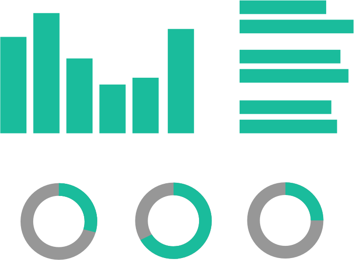
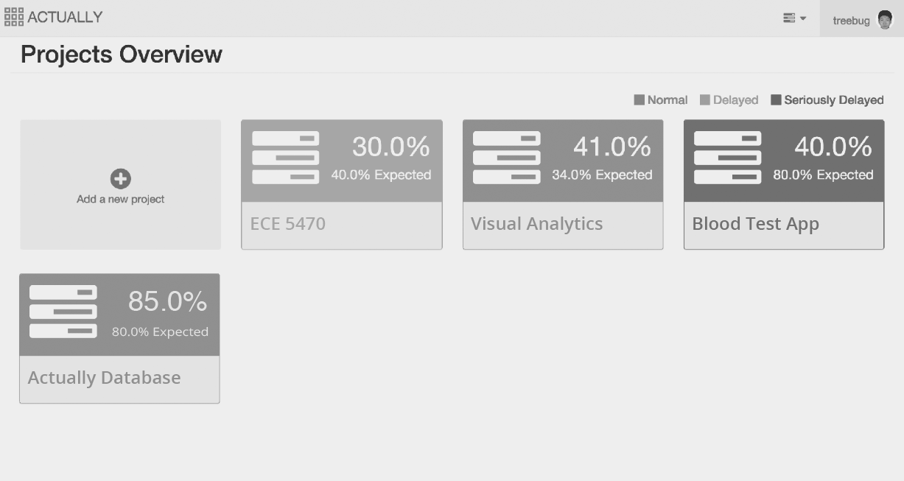
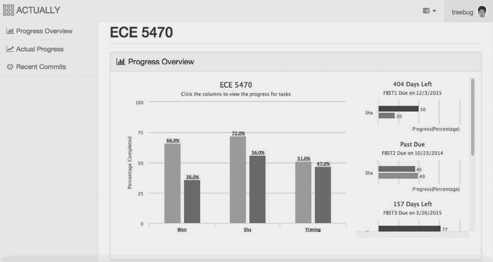
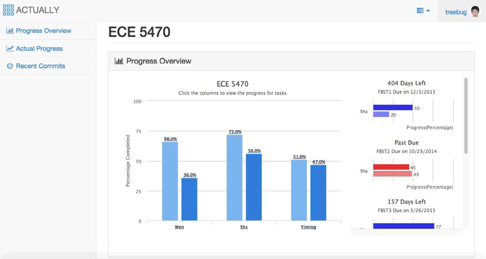

Color the information.
Color label the progress. Color can intuitively show how a project is going. Green means everything is on track; Yellow is reminder of slow progress; Red gives warning that the actual progress is falling too much behind.


Highlight delayed tasks. Among the upcoming dues, tasks which are falling behind deadlines are highlited in red, make it easy to identify where the problem/difficulty is comimg from.

